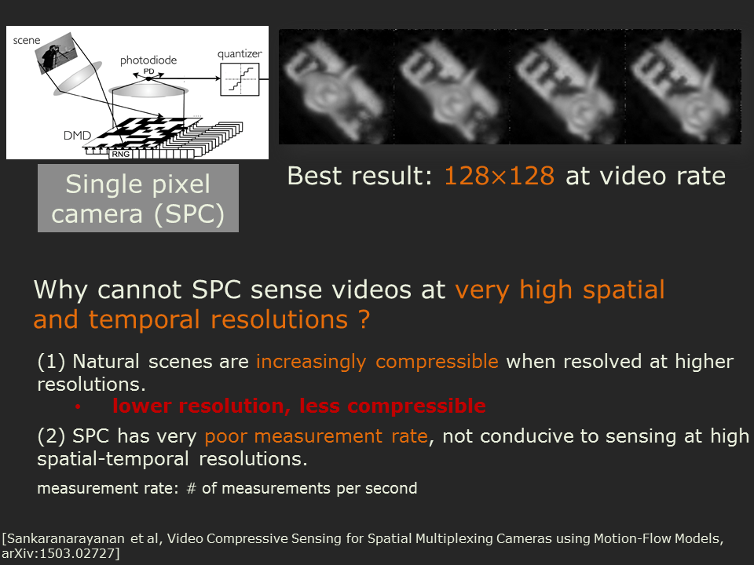
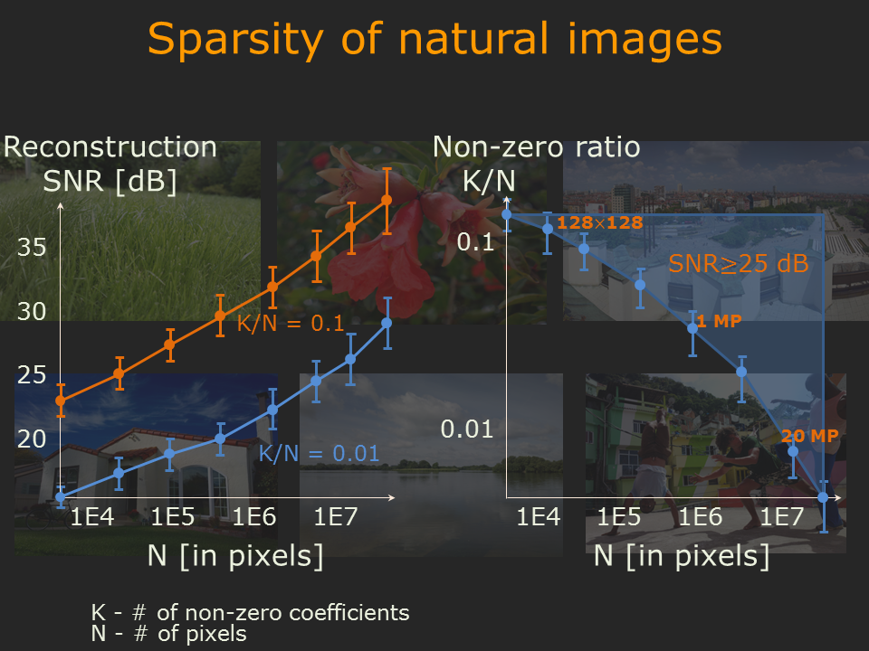
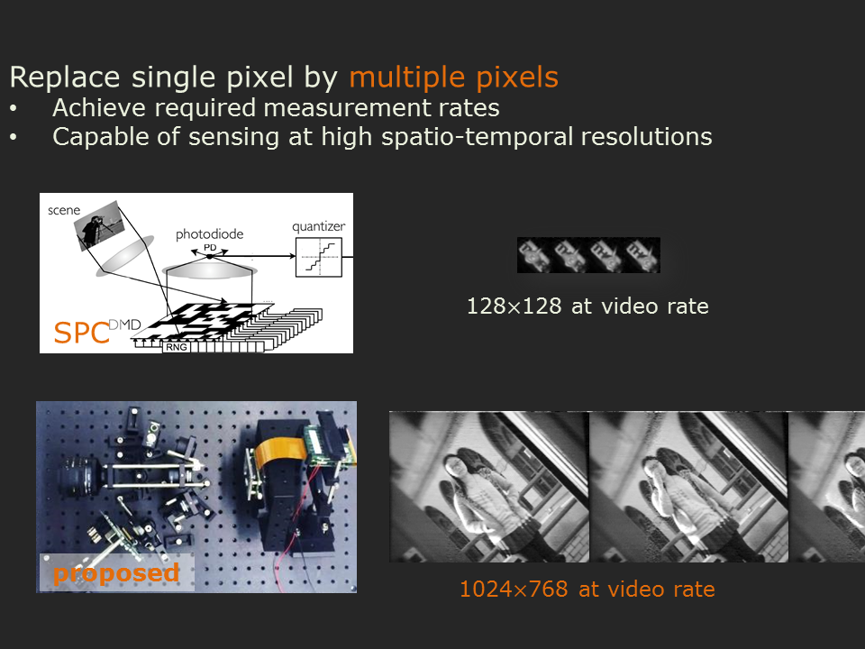
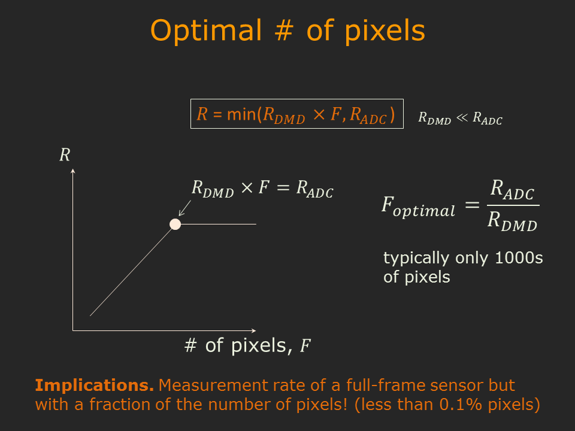
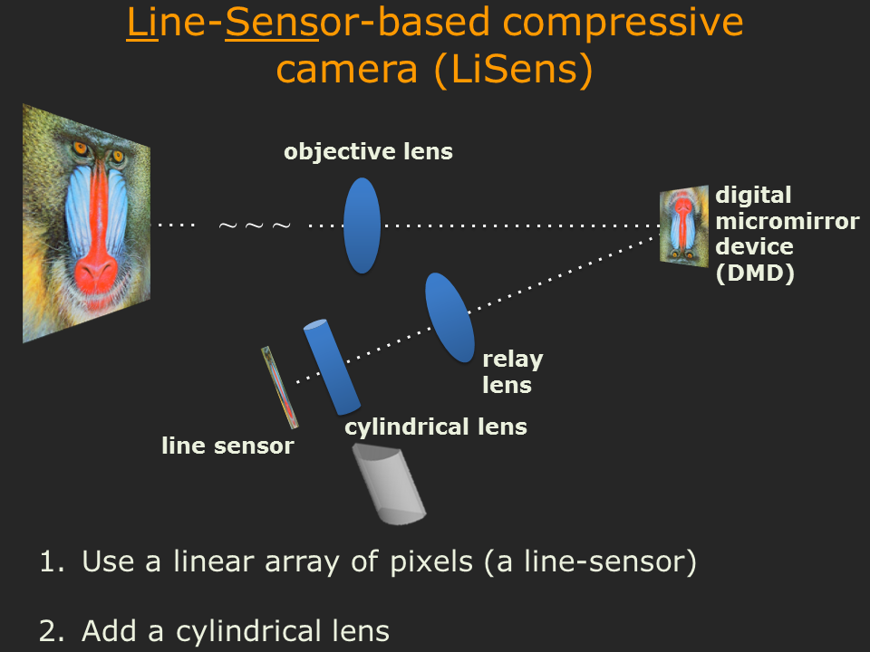
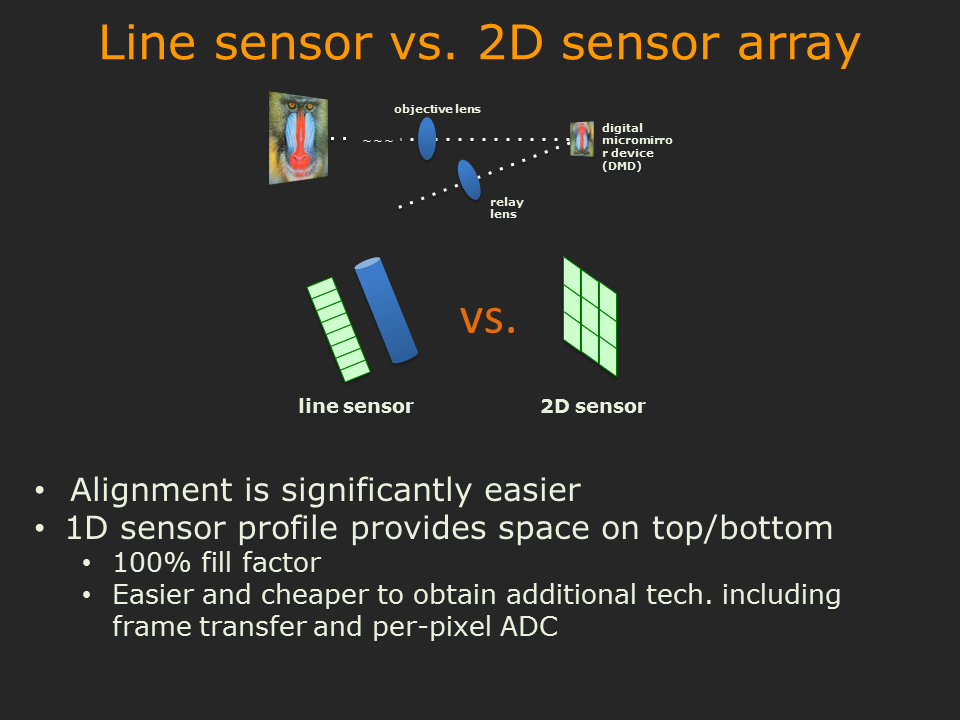

Jian Wang, Mohit Gupta, and Aswin C. Sankaranarayanan
IEEE Intl. Conf. Computational Photography, 2015
| The measurement rate of cameras that take spatially multiplexed measurements by using spatial light modulators (SLM) is often limited by the switching speed of the SLMs. This is especially true for single-pixel cameras where the photodetector operates at a rate that is many orders-of-magnitude greater than the SLM. We study the factors that determine the measurement rate for such spatial multiplexing cameras (SMC) and show that increasing the number of pixels in the device improves the measurement rate, but there is an optimum number of pixels (typically, few thousands) beyond which the measurement rate does not increase. This motivates the design of LiSens, a novel imaging architecture, that replaces the photodetector in the single-pixel camera with a 1D linear array or a line-sensor. We illustrate the optical architecture underlying LiSens, build a prototype, and demonstrate results of a range of indoor and outdoor scenes. LiSens delivers on the promise of SMCs: imaging at a megapixel resolution, at video rate, using an inexpensive low-resolution sensor. | |
|
|
|
|
Prototype of the LiSens camera
|
|
|
LiSens— A Scalable Architecture for Video Compressive Sensing Jian Wang, Mohit Gupta, and Aswin C. Sankaranarayanan IEEE Intl. Conf. Computational Photography, 2015 |
| 
Fig: Why cannot SPC sense videos at high resolutions |
A classical work in compressive sensing imaging is the single pixel camera (SPC). The left figure shows one of the best-known results on real hardware to date. This result is only 128*128 images at video rate. We should stop and think for a second that why cannot we get megapixel-images at video rate using the SPC. |
| 
Fig: Natural scenes are increasingly compressible when resolved at higher spatial resolutions |
We collect a bunch of 90 megapixel images of natural scenes. We do wavelet transform to images first, then keep the largest K wavelet coefficients unchanged and set the others to zero, and use the modified coefficients to reconstruct the image. Suppose the image has N pixels, so we have N wavelet coefficients. We define K/N as the non-zero ratio. |
| 
Fig: Replace single pixel by multiple pixels |
We found that “Natural images are increasingly compressible when resolved at higher (spatial) resolutions” which implies that we can expect compressive sensing techniques to perform better when we sense signals at higher resolutions. The challenge of compressive sensing at high-resolutions is that resolving scenes at high spatial-temporal resolutions, even with a compressive camera, requires very high measurement rate.
|
| 
Fig: Optimal number of pixels |
There is a minimum # of pixels at which we can achieve the max possible measurement rate. When pixels are costly, as in the case of SWIR imaging, we want to operate at this particular point because it gives us a sensor that’s of very low resolution and inexpensive but yet gives us a measurement rate that's as high as what's possible given the architecture constraints.
|
 Fig: LiSens |
We build Line-sensor-based compressive camera, in short LiSens, to demonstrates this. |
 Fig: Line sensor Vs. 2D sensor array |
We can use a line sensor or a 2D sensor to replace the photo-detector. We choose to use line sensor for two reasons.
|
1 min's introduction |
4.5 mins' introduction |